Show the code
plot_sine()
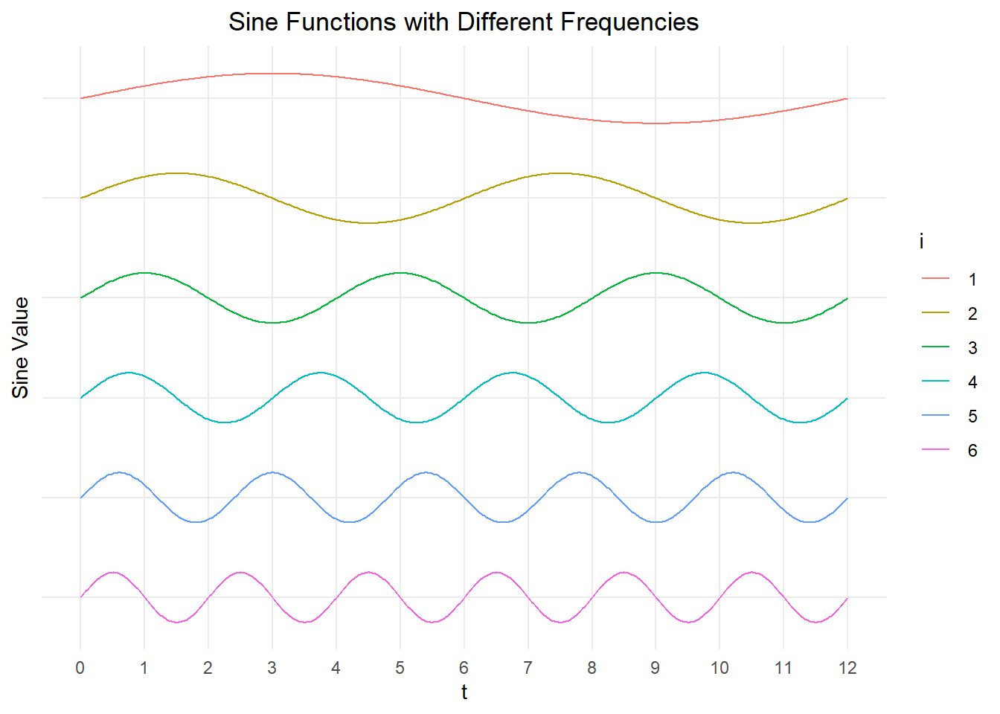
Chapter 5: Lesson 2
Review another student’s journal
What would you add to your learning journal after reading another student’s?
What would you recommend the other student add to their learning journal?
Sign the Learning Journal review sheet for your peer
In the previous lesson, we learned how to incorporate an indicator (or dummy) variable for each season in a period. If there are twelve months in a year, this requires having twelve parameters in the model. Given that many seasonal changes are gradual and can be modeled by a continuous function, we can use sines and cosines to approximate the seasonal variation. This can lead to a smaller number of parameters than is required for the indicator variable approach.
Consider the sine wave with the following parameters:
\[ A \sin ( 2 \pi f t + \phi ) \]
Here is an interactive plot of this function. Adjust the values of \(A\), \(f\), and \(\phi\) to see their effect on the function.
Notice that this sine function is not linear in the parameters \(A\) and \(\phi\).
\[ A \sin ( 2 \pi f t + \phi ) \]
One of the trigonometric sum and difference identities is:
\[ \sin(\theta + \phi) = \cos(\phi) \sin(\theta) + \sin(\phi) \cos(\theta) \]
We apply this to our sine function.
\[\begin{align*} A \sin ( 2 \pi f t + \phi ) &= \underbrace{A \cos( \phi )}_{\alpha_s} \cdot \sin ( 2 \pi f t ) + \underbrace{A \sin( \phi )}_{\alpha_c} \cdot \cos ( 2 \pi f t ) \\ &= \alpha_s \cdot \sin ( 2 \pi f t ) + \alpha_c \cdot \cos ( 2 \pi f t ) \end{align*}\]
We have transformed this from something that is not linear in the parameters \(A\) and \(\phi\) to an expression that is linear in the parameters \(\alpha_s\) and \(\alpha_c\).
We can denote the frequency of a sine function as \(f = \frac{i}{s}\), where \(s\) is the number of seasons in a cycle and \(i\) is some integer. This leads the following representation:
\[\begin{align*} A \sin \left( \frac{2 \pi i t}{s} + \phi \right) &= \underbrace{A \cos( \phi )}_{\alpha_s} \cdot \sin \left( \frac{2 \pi i t}{s} \right) + \underbrace{A \sin( \phi )}_{\alpha_c} \cdot \cos \left( \frac{2 \pi i t}{s} \right) \\ &= \alpha_s \cdot \sin \left( \frac{2 \pi i t}{s} \right) + \alpha_c \cdot \cos \left( \frac{2 \pi i t}{s} \right) \end{align*}\]
Figure 1 and Figure 2 illustrate these sine and cosine functions with various values of \(i\), where \(s = 12\).
plot_sine()plot_cosine()One key objective of this lesson is to use a linear combination of functions like those above to model the seasonal component of a time series.
We now explore an important mathematical concept that allows us to approximate any periodic function. If we have an infinite number of terms, the Fourier Series described below gives an exact representation of the function.
The Fourier Series is an infinite series representation of a smooth function \(f(t)\) with period \(s\):
\[ f(t) = \frac{A_{s_0}}{2} + \sum_{i=1}^{\infty} \left\{ \alpha_{s_i} \sin \left( \frac{2\pi i t}{s} \right) + \alpha_{c_i} \cos \left( \frac{2\pi i t}{s} \right) \right\} \]
The coefficients \(\alpha_{s_i}\) and \(\alpha_{c_i}\) are defined by the integrals:
\[ \alpha_{s_i} = \frac{2}{s} \int_0^s f(t) \cos \left( \frac{2\pi i t}{s} \right) \; dt ~~~~~~~~~~~~~~~~~~ \alpha_{c_i} = \frac{2}{s} \int_0^s f(t) \sin \left( \frac{2\pi i t}{s} \right) \; dt \]
(You will not need to compute any of these integrals.)
As an example, we will approximate the periodic function illustrated here with a Fourier series.

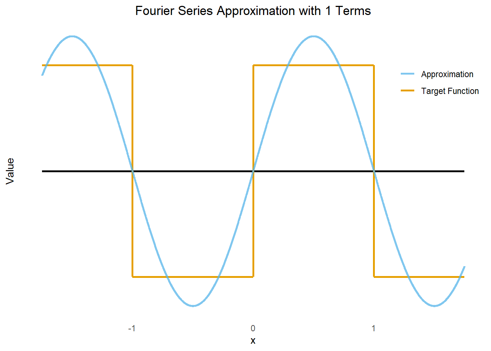
\[ f(x) \approx sin(\pi x) \]
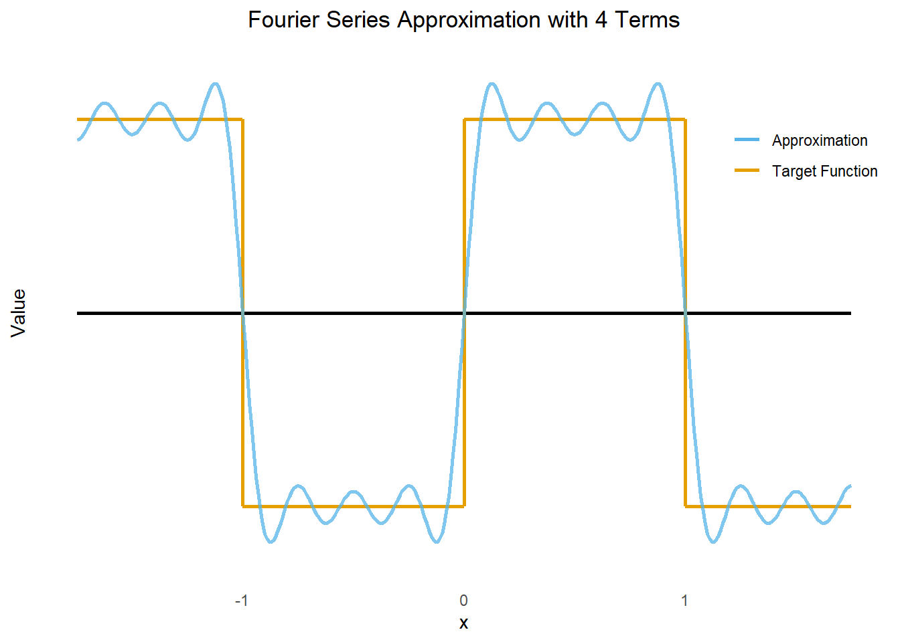
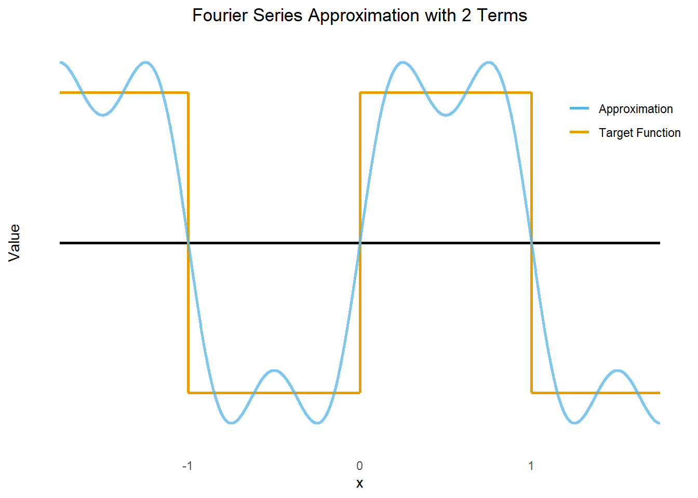
\[ f(x) \approx \sin(\pi x) + \frac{1}{3} \sin(3 \pi x) \]
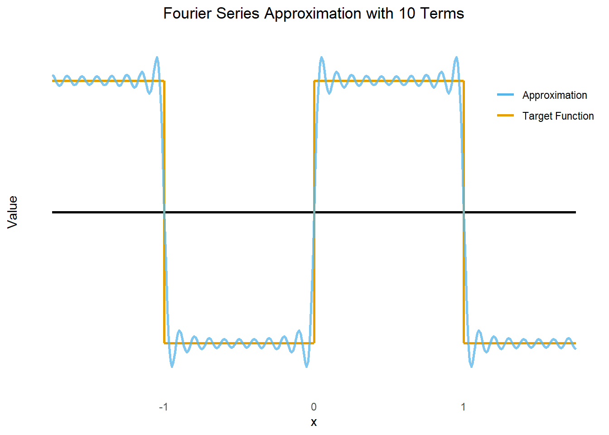
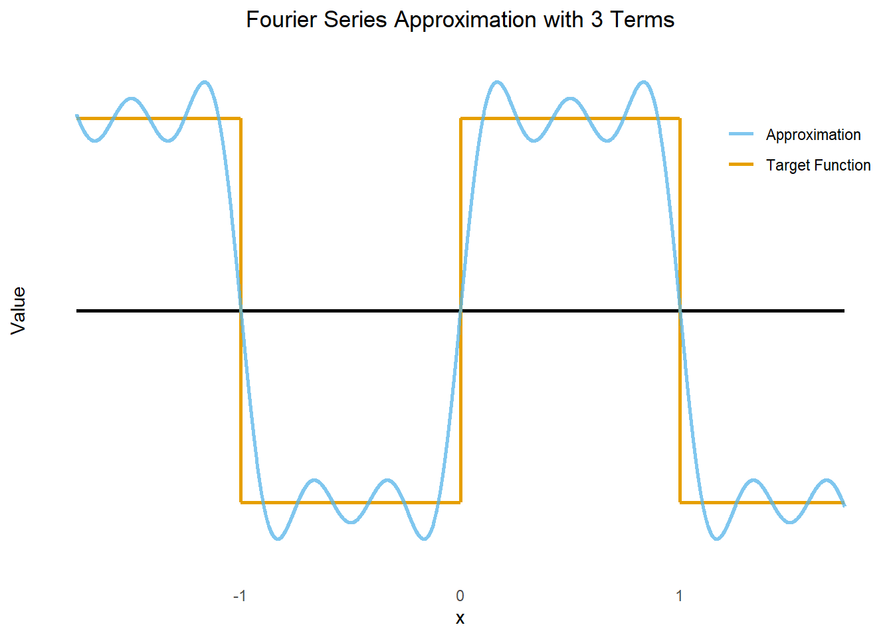
\[ f(x) \approx \sin(\pi x) + \frac{1}{3} \sin(3 \pi x) + \frac{1}{5} \sin(5 \pi x) \]
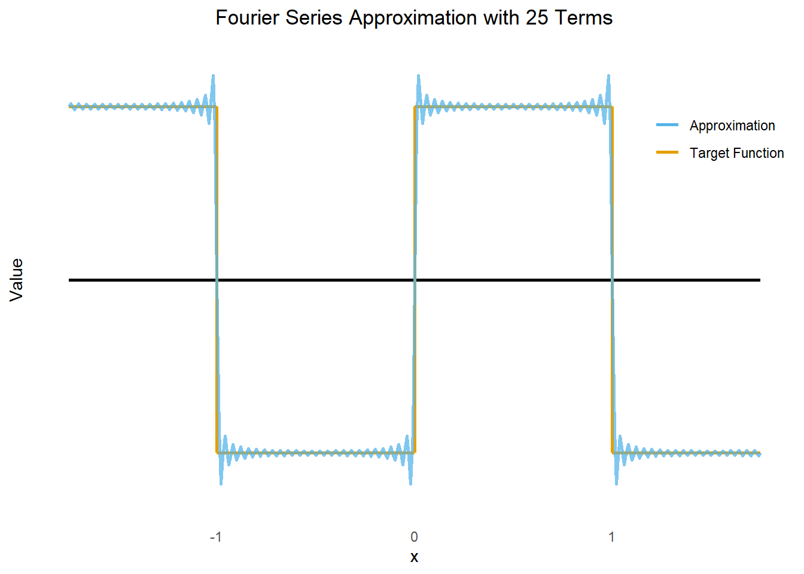
\[ f(x) \approx \sin(\pi x) + \frac{1}{3} \sin(3 \pi x) + \frac{1}{5} \sin(5 \pi x) + \frac{1}{7} \sin(7 \pi x) \]

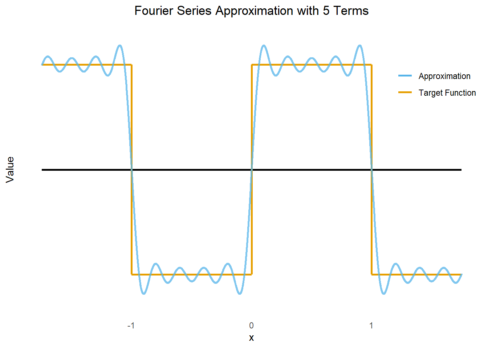
\[ f(x) \approx sin(\pi x) + \frac{1}{3} \sin(3 \pi x) + \frac{1}{5} \sin(5 \pi x) + \frac{1}{7} \sin(7 \pi x) + \frac{1}{9} \sin(9 \pi x) \]
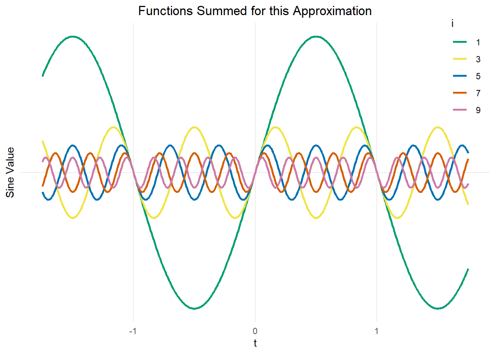
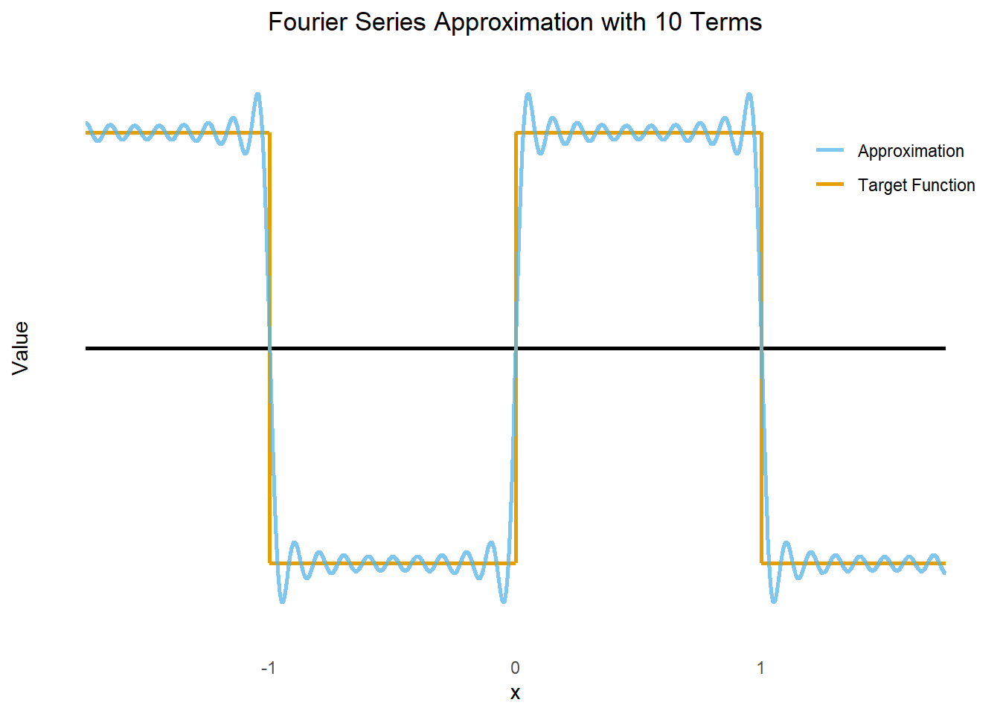
\[ f(x) \approx sin(\pi x) + \frac{1}{3} \sin(3 \pi x) + \frac{1}{5} \sin(5 \pi x) + \cdots + \frac{1}{17} \sin(17 \pi x) + \frac{1}{19} \sin(19 \pi x) \]
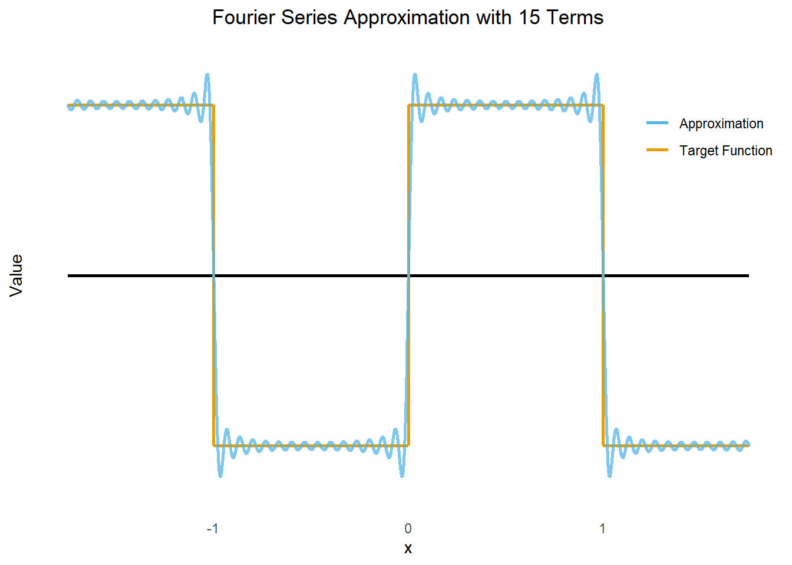
\[ f(x) \approx sin(\pi x) + \frac{1}{3} \sin(3 \pi x) + \frac{1}{5} \sin(5 \pi x) + \cdots + \frac{1}{27} \sin(27 \pi x) + \frac{1}{29} \sin(29 \pi x) \]
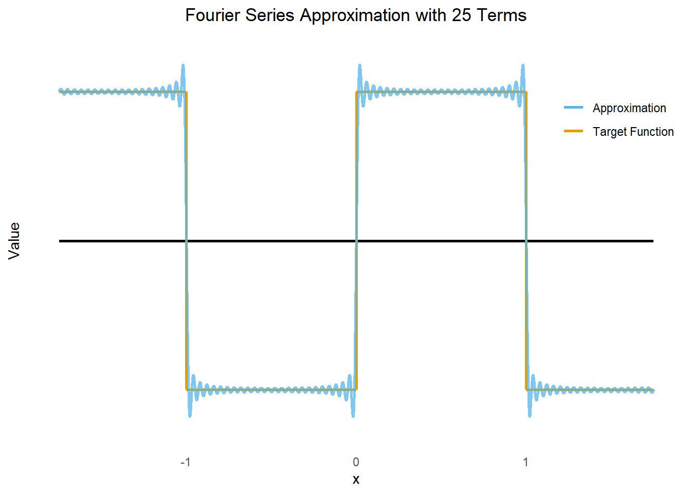
\[ f(x) \approx sin(\pi x) + \frac{1}{3} \sin(3 \pi x) + \frac{1}{5} \sin(5 \pi x) + \cdots + \frac{1}{47} \sin(47 \pi x) + \frac{1}{49} \sin(49 \pi x) \]
\[ f(x) \approx sin(\pi x) + \frac{1}{3} \sin(3 \pi x) + \frac{1}{5} \sin(5 \pi x) + \cdots + \frac{1}{97} \sin(97 \pi x) + \frac{1}{99} \sin(99 \pi x) \]
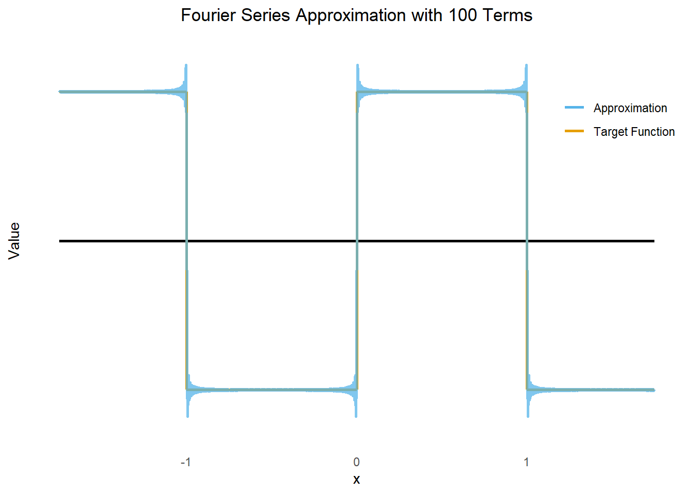
\[ f(x) \approx sin(\pi x) + \frac{1}{3} \sin(3 \pi x) + \frac{1}{5} \sin(5 \pi x) + \cdots + \frac{1}{197} \sin(197 \pi x) + \frac{1}{199} \sin(199 \pi x) \]
We can continue to get more and more precise estimates of the function by just adding more terms to the sum. So, the function \(f(t)\) can be approximated to any desired level of precision by truncating the series after a sufficient number of terms. For the purpose of this discussion, we will define “one term” as an expression of the form \[ \left\{ \alpha_{s_i} \sin \left( \frac{2\pi i t}{s} \right) + \alpha_{c_i} \cos \left( \frac{2\pi i t}{s} \right) \right\} \]
The Fourier series exists for any smooth (continuously differentiable) function. Note theoretically, this allows us to obtain the value of the function at any real value by using this series. However, for a discrete time series with \(s\) seasons, we only need to evaluate the function at a finite number of points: \(t = 1, 2, 3, \ldots, s-1, s\). For example, in the previous lesson, we used twelve indicator variables to pass through twelve points in a monthly seasonal component to a time series with annual cycles.
It turns out, that we only need six terms (which involves twelve coefficients) to fit monthly data with annual cycles. In general, we only need to obtain \(\left\lfloor \frac{s}{2} \right\rfloor\) terms of this sum to fit the seasonal values perfectly.
| Pattern | Number of Seasons, \(s\) | Maximum terms in the sum, \(\left\lfloor \frac{s}{2} \right\rfloor\) |
|---|---|---|
| Days in a Week | 7 | 3 |
| Quarters in a Year | 4 | 2 |
| Months in a Year | 12 | 6 |
Note that if \(s\) is even and \(i=\frac{s}{2}\), \[ \sin \left( \frac{2\pi i t}{s} \right) = \sin \left( \frac{2\pi \cdot \frac{s}{2} \cdot t}{s} \right) = \sin \left( \pi t \right) = 0 \] for all integer values of \(t\). So, this term must be omitted from the model. If we try to include it in the model, the coefficient will be rediculously large, as R trys to make the product of something very close to 0 (the value from the sine function) and the coefficient multiply to some reasonably small number.
The method for fitting seaonal components using indicator variables does not assume any relationship between successive seasons. However, values observed in January are often highly correlated with values observed in February, etc. Fitting a seasonal component using terms in the Fourier Series can often yield a good approximation for the periodic cycles with only a few terms.
For a time series with \(s\) seasons per cycle, our additive model can be written as:
\[\begin{align*} x_t &= m_t + s_t + z_t \\ &= m_t + \sum_{i=1}^{\left\lfloor \frac{s}{2} \right\rfloor} \left\{ \alpha_{s_i} \sin \left( \frac{2\pi i t}{s} \right) + \alpha_{c_i} \cos \left( \frac{2\pi i t}{s} \right) \right\} + z_t \end{align*}\]
The term \(m_t\) can take a variety of forms, including:
The term \(z_t\) is a (possibly autocorrelated) time series with mean zero.
We will now focus on the seasonal term, \(s_t\). The full seasonal term when considering 12 months in a year is:
\[\begin{align*} s_t &= \sum_{i=1}^{\left\lfloor \frac{s}{2} \right\rfloor} \left\{ \alpha_{s_i} \sin \left( \frac{2\pi i t}{s} \right) + \alpha_{c_i} \cos \left( \frac{2\pi i t}{s} \right) \right\} \\ &= \sum_{i=1}^{6} \left\{ \alpha_{s_i} \sin \left( \frac{2\pi i t}{12} \right) + \alpha_{c_i} \cos \left( \frac{2\pi i t}{12} \right) \right\} \\ &=~~~~ \left\{ \alpha_{s_1} \sin \left( \frac{2\pi \cdot 1 t}{12} \right) + \alpha_{c_1} \cos \left( \frac{2\pi \cdot 1 t}{12} \right) \right\} & \leftarrow i = 1 \\ &~~~~~+ \left\{ \alpha_{s_2} \sin \left( \frac{2\pi \cdot 2 t}{12} \right) + \alpha_{c_2} \cos \left( \frac{2\pi \cdot 2 t}{12} \right) \right\} & \leftarrow i = 2 \\ &~~~~~+ \left\{ \alpha_{s_3} \sin \left( \frac{2\pi \cdot 3 t}{12} \right) + \alpha_{c_3} \cos \left( \frac{2\pi \cdot 3 t}{12} \right) \right\} & \leftarrow i = 3 \\ &~~~~~+ \left\{ \alpha_{s_4} \sin \left( \frac{2\pi \cdot 4 t}{12} \right) + \alpha_{c_4} \cos \left( \frac{2\pi \cdot 4 t}{12} \right) \right\} & \leftarrow i = 4 \\ &~~~~~+ \left\{ \alpha_{s_5} \sin \left( \frac{2\pi \cdot 5 t}{12} \right) + \alpha_{c_5} \cos \left( \frac{2\pi \cdot 5 t}{12} \right) \right\} & \leftarrow i = 5 \\ &~~~~~+ \left\{ \alpha_{s_6} \sin \left( \frac{2\pi \cdot 6 t}{12} \right) + \alpha_{c_6} \cos \left( \frac{2\pi \cdot 6 t}{12} \right) \right\} & \leftarrow i = 6 \\ &=~~~~ \left\{ \alpha_{s_1} \sin \left( \frac{2\pi \cdot 1 t}{12} \right) + \alpha_{c_1} \cos \left( \frac{2\pi \cdot 1 t}{12} \right) \right\} \\ &~~~~~+ \left\{ \alpha_{s_2} \sin \left( \frac{2\pi \cdot 2 t}{12} \right) + \alpha_{c_2} \cos \left( \frac{2\pi \cdot 2 t}{12} \right) \right\} \\ &~~~~~+ \left\{ \alpha_{s_3} \sin \left( \frac{2\pi \cdot 3 t}{12} \right) + \alpha_{c_3} \cos \left( \frac{2\pi \cdot 3 t}{12} \right) \right\} \\ &~~~~~+ \left\{ \alpha_{s_4} \sin \left( \frac{2\pi \cdot 4 t}{12} \right) + \alpha_{c_4} \cos \left( \frac{2\pi \cdot 4 t}{12} \right) \right\} \\ &~~~~~+ \left\{ \alpha_{s_5} \sin \left( \frac{2\pi \cdot 5 t}{12} \right) + \alpha_{c_5} \cos \left( \frac{2\pi \cdot 5 t}{12} \right) \right\} \\ &~~~~~+ \left\{ \phantom{\alpha_{s_6} \sin \left( \frac{2\pi \cdot 6 t}{12} \right) +}~~ \alpha_{c_6} \cos \left( \frac{2\pi \cdot 6 t}{12} \right) \right\} \\ \end{align*}\]
Note that \(\sin \left( \frac{2\pi \cdot 6 t}{12} \right) = 0\) for all integer values of \(t\), so we can omit the term \(\alpha_{s_6} \sin \left( \frac{2\pi \cdot 6 t}{12} \right)\).
As noted above, we can often use a relatively small subset of these terms to get a good approximation of the seasonal component.
The following simulation illustrates harmonic seasonal terms. The values S1, S2, S3, \(\ldots\) represent the coefficients on the sine functions: \(\alpha_{s_1}, ~ \alpha_{s_2}, ~ \alpha_{s_3}, ~ \ldots, ~ \alpha_{s_6}\). Similarly, the values C1, C2, C3, \(\ldots\) represent the coefficients on the corresponding cosine terms: \(\alpha_{c_1}, ~ \alpha_{c_2}, ~ \alpha_{c_3}, ~ \ldots, ~ \alpha_{c_6}\).
Adjust the values of the parameters to create different seasonal patterns. Note that this is just a sum of sine and cosine function with various frequencies and amplitudes.